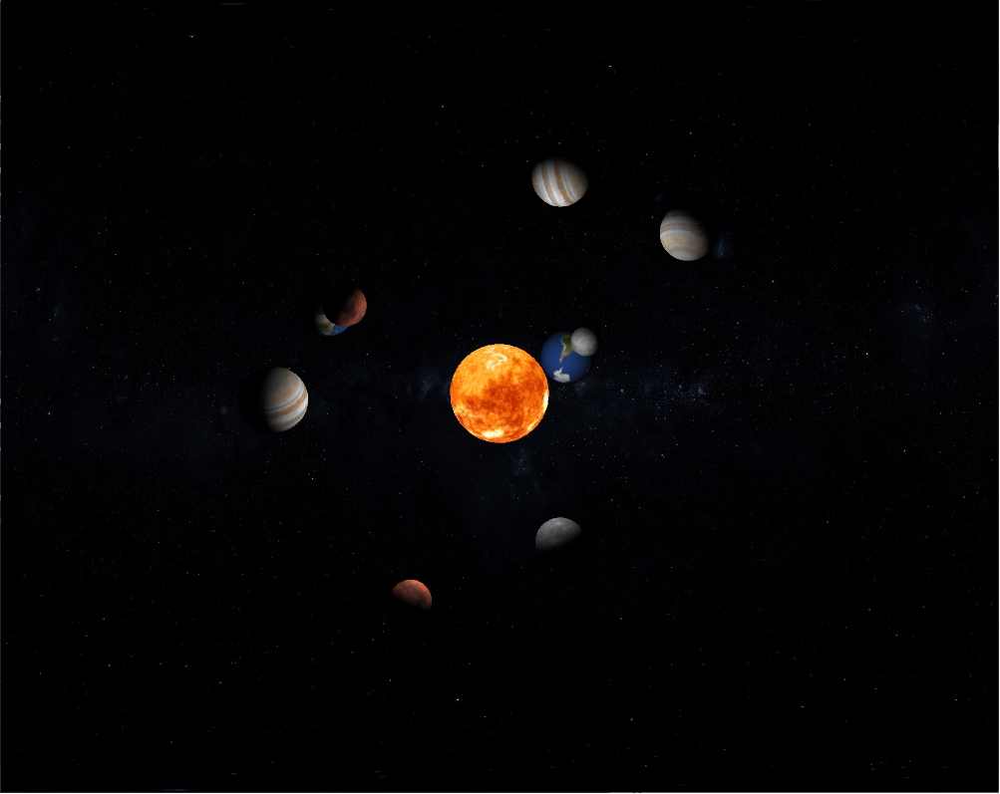
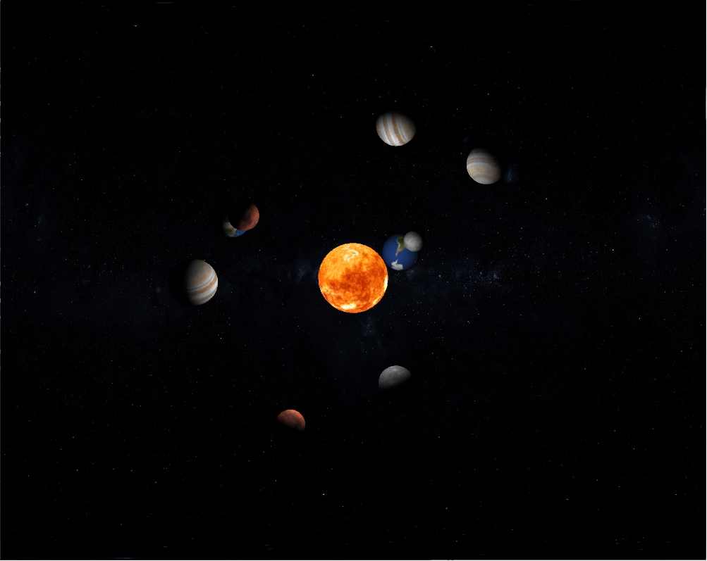

Hello my name is Vladimir
Hello, my name is Vladimir I really enjoy working with the computer including hardware and software, yet I never had an experience learning Java before Boot Camp at the City. It is my passion to become an expert at different programming languages to be able to guard and serve websites and servers, edit and produce games. Bootcamp showed me that coding is a complex and requires a lot of knowledge to be able to code fluently, however boot camp Explained everything excellently and made it easier to understand for any person with any level of knowledge about coding.
Bootcamp 2020: Forest scene
My first programming project, concluding the 2 week Programming Bootcamp at City (2020). My project is about a 3D interactive solar system model, the closing of the project is demonstrating understanding of different elements such as if statements, loops, randomness, inserting different except from the computer such as I would your files and images, interaction from the user by hovering the mouse which will change camera position, classes, etc. (see images below). My project is about a solar system and all the elements (planets) are stored in an array which then get a random texture of a planet which then will orbit around the SUN. I achieved that effect of orbiting around an object in 3D by allocating 3 variables that are drawn 60 times a second and constantly changes and repeats itself.
Hello everyone in this video I'm going to show my game to you, to start you off I'm going to talk about the key features of the game. The game itself is very immersive as whenever the player is progressing throughout the levels many objects are talking back to the main character by telling a short story which really engages the player into investiga ting the game world2 furthermore, just like this owl at the beginning of the game holding a latter in its claws. As you can see the game had already introduced the player into the lore that he is a samurai who is heading to help ok, following on there would be some enemies to eliminate and some scroll to be obtain which will help progressing throughout game. And again, the game gave a little insight to the player about the current situation and what is the main goal is. Following on to the second level we can see that the enemies had grew in number as well as the number of scrolls to obtain. The game itself features many different and interesting yet mysterious characters not including our main character who is a red suited samurai. Talking about interesting characters there is a mysterious ghost whos power grows with the number of scrolls that our samurai is continually collecting. The game will take the character on to the adventurous trip.
Check out the code on Github: https://github.com/VladimirSocolnic/adbt102.git/

 
